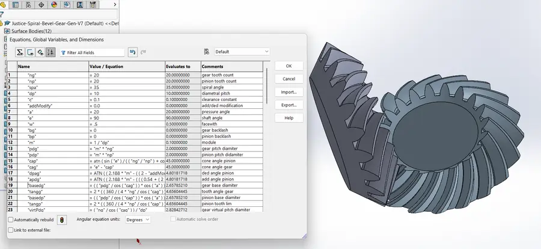
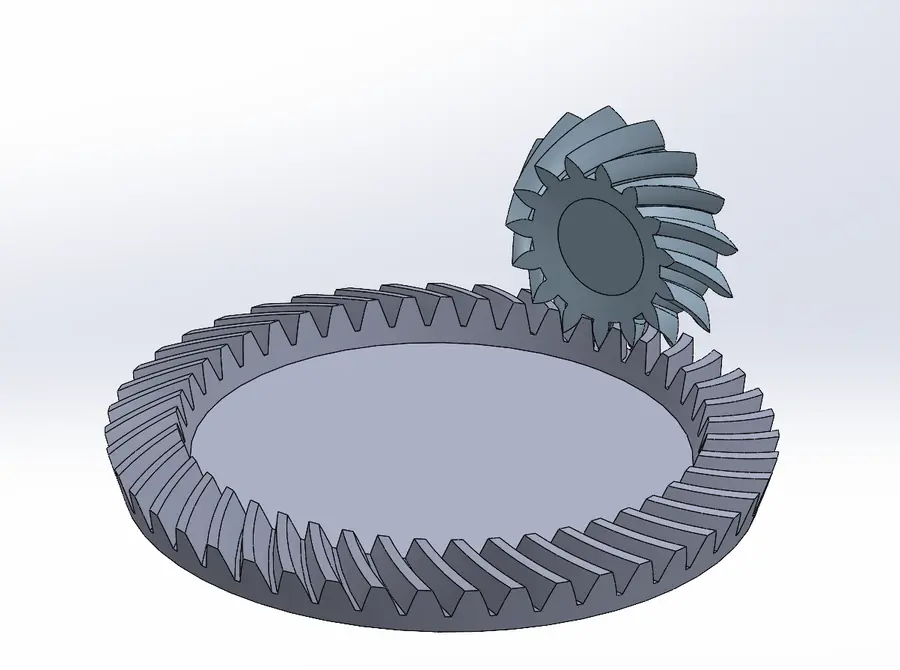
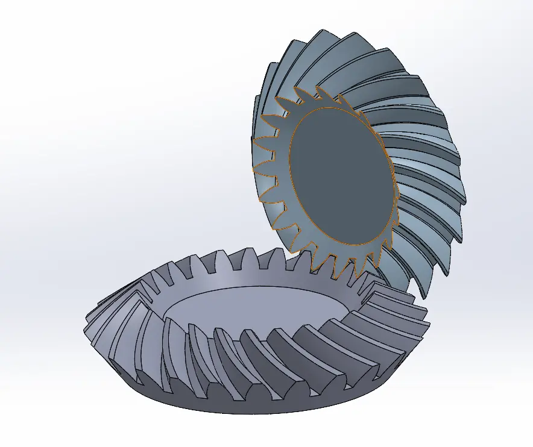
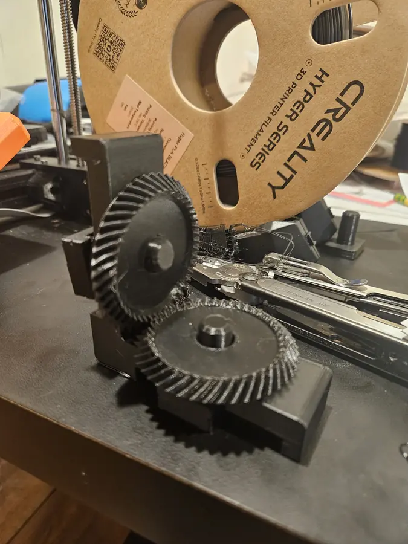

Why build a generator
Bevel gears turn up all over my mechanisms: the coaxial-swerve wrist, differentials and right-angle drives. Off-the-shelf models come in fixed sizes, and spiral bevel geometry is hard to construct by hand. So I built a single part file that generates the gear pair from parameters, accurately enough that the two gears really mesh.
How it works
Everything is driven from the SolidWorks equations manager. The inputs are gear and pinion tooth counts, diametral pitch, pressure angle and spiral angle, plus shaft angle, face width, clearance, addendum modification and backlash. Pitch diameters, cone angles, addendum and dedendum angles, base diameters and the virtual (back-cone) dimensions are all derived from those.

Tredgold's approximation
A true bevel tooth profile lies on a sphere, which is awkward to construct. Tredgold's approximation develops the tooth on the back cone instead, the cone tangent to the pitch sphere at the pitch circle. Unrolled flat, the back cone becomes an equivalent spur gear, and a standard involute profile can be drawn on it.
Making it spiral
On a spiral bevel the tooth curves across the face. The generator draws the Tredgold involute at three stations along the face width, each rotated to the angle where the spiral passes through that station. A loft through the three involute curves gives a tooth flank surface that tracks the spiral. Those surfaces, together with others built from 3D-sketch splines and equations, are then combined into the pinion and gear tooth solids. Keeping every curve equation-driven is what keeps the pair geometrically consistent, so it meshes no matter which parameters change.


Verification
The real test of the geometry is whether the gears mesh. I 3D-printed a generated pair and ran them together.
